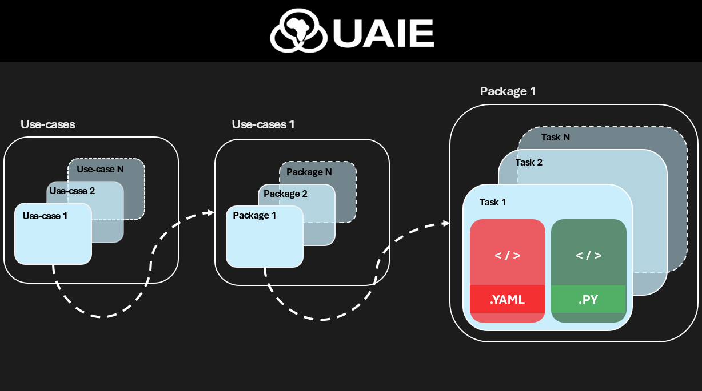

Project Structure¶
A typical Ubunye project lays out pipelines by use-case → pipeline → task,
mirroring how ubunye init and ubunye run address tasks.

Recommended layout¶
my_project/
├── pipelines/ ← root task directory (-d flag)
│ └── fraud_detection/ ← use-case (-u flag)
│ └── ingestion/ ← pipeline (-p flag)
│ └── claim_etl/ ← task (-t flag)
│ ├── config.yaml
│ ├── transformations.py
│ └── notebooks/
│ └── claim_etl_dev.ipynb ← interactive dev notebook
├── .ubunye/
│ ├── lineage/ ← run provenance (--lineage flag)
│ └── model_store/ ← model registry artifacts
├── pyproject.toml
└── mkdocs.yml
Task folder¶
| File | Purpose |
|---|---|
config.yaml |
Declares inputs, transform, outputs, engine, orchestration |
transformations.py |
Python transform (Task subclass) |
model.py |
Optional ML model (UbunyeModel subclass) for type: model transforms |
notebooks/<task>_dev.ipynb |
Interactive dev notebook (Databricks-ready) |
Every task is self-contained. The config is the single source of truth for what runs and where.
config.yaml skeleton¶
MODEL: etl # or ml
VERSION: "1.0.0" # semver
ENGINE:
spark_conf:
spark.sql.shuffle.partitions: "200"
profiles:
dev:
spark_conf:
spark.sql.shuffle.partitions: "4"
CONFIG:
inputs:
my_input:
format: hive
db_name: raw
tbl_name: events
transform:
type: noop # noop | task | model | <custom>
params: {}
outputs:
my_output:
format: delta
path: s3://bucket/clean/events
mode: overwrite
ORCHESTRATION:
type: airflow
schedule: "0 2 * * *"
retries: 3
owner: data-engineering
Engine library layout (reference)¶
ubunye/
├── api.py — Public Python API (run_task, run_pipeline)
├── core/ — Engine, Registry, interfaces (Reader/Writer/Transform/Task/Backend)
├── config/ — YAML loader, Jinja resolver, Pydantic schema
├── backends/
│ ├── spark_backend.py — Creates new SparkSession
│ └── databricks_backend.py — Reuses active SparkSession (Databricks)
├── plugins/
│ ├── readers/ — hive, jdbc, unity, rest_api, s3
│ ├── writers/ — s3, jdbc, unity, rest_api
│ ├── transforms/ — noop, model_transform
│ └── ml/ — BaseModel, SklearnModel, SparkMLModel (internal wrappers)
├── models/ — UbunyeModel contract, loader, registry, gates
├── cli/ — main, lineage, models, test sub-apps
├── lineage/ — RunContext, LineageRecorder, FileSystemLineageStore
└── telemetry/ — events, mlflow, prometheus, otel, monitors protocol
Environment profiles¶
Profiles let you override Spark config without duplicating YAML:
ENGINE:
spark_conf:
spark.executor.memory: "8g"
profiles:
dev:
spark_conf:
spark.executor.memory: "512m"
spark.sql.shuffle.partitions: "4"
prod:
spark_conf:
spark.executor.memory: "32g"
Select at runtime:
ubunye run -d pipelines -u fraud -p etl -t claims -m dev
ubunye run -d pipelines -u fraud -p etl -t claims -m prod
Or via the Python API: